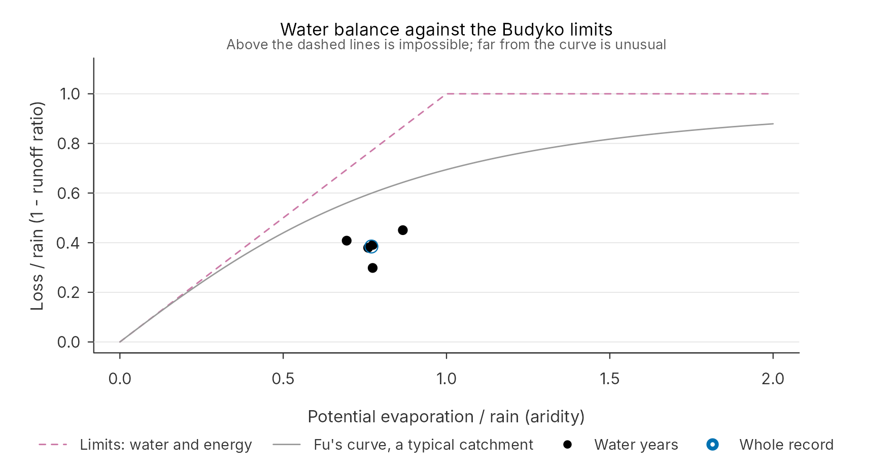
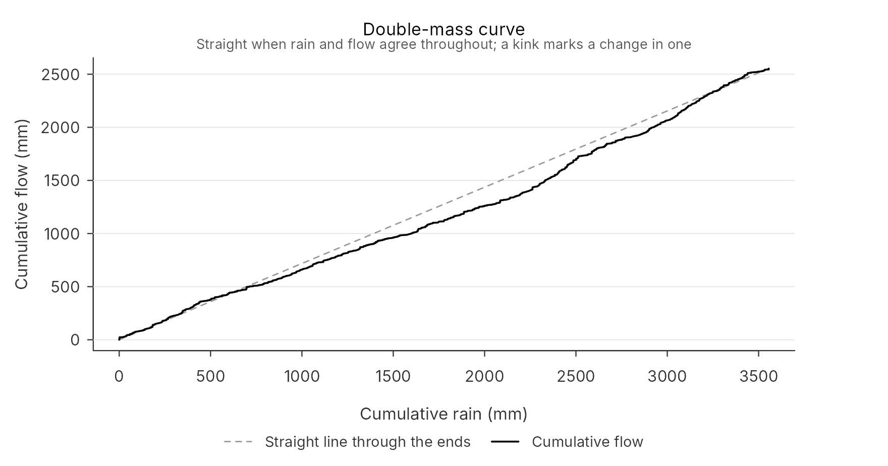
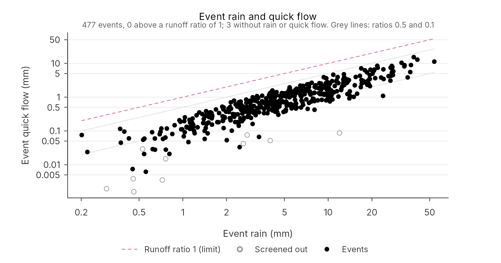
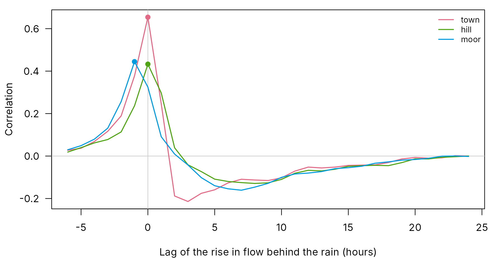
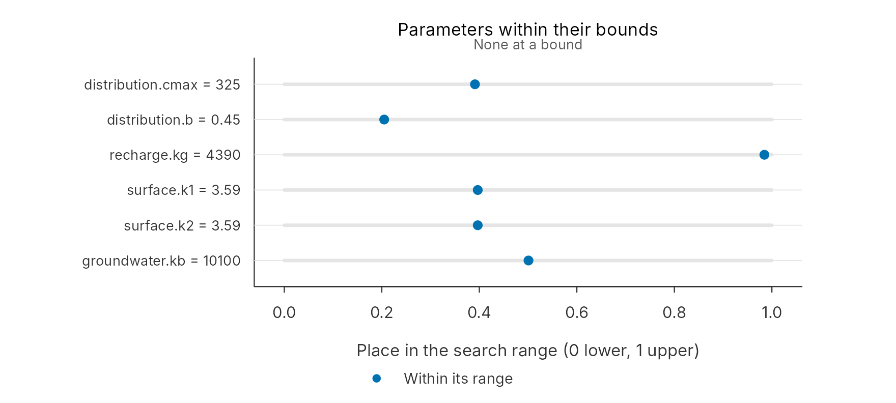
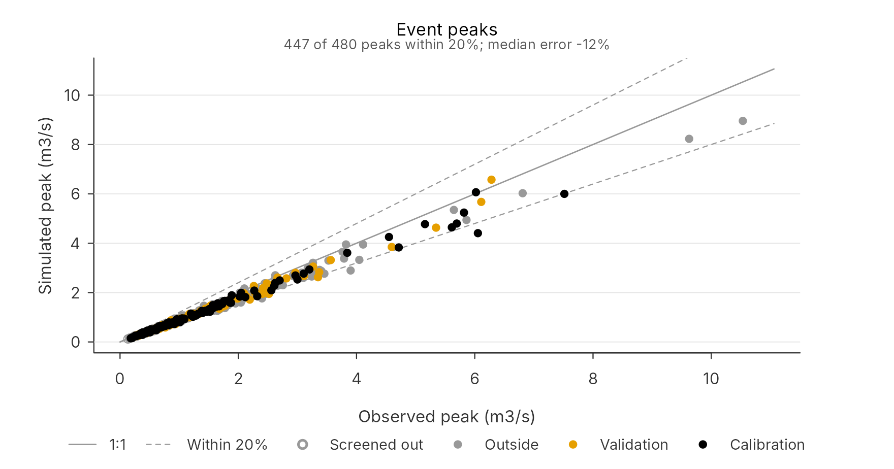
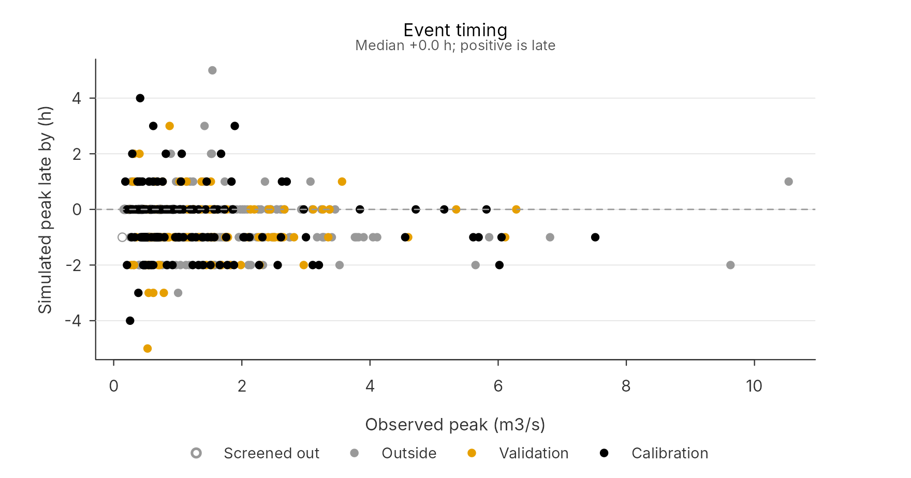
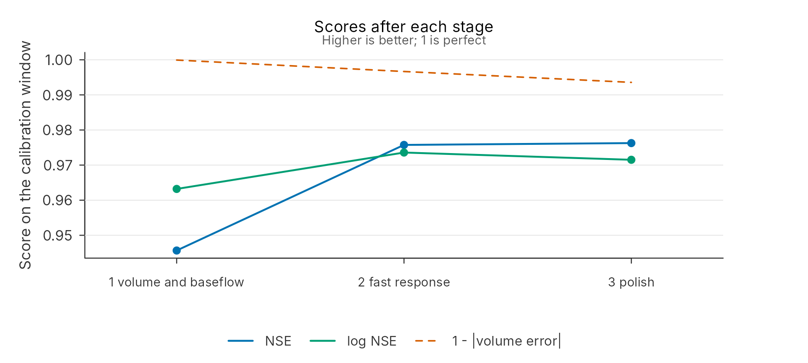
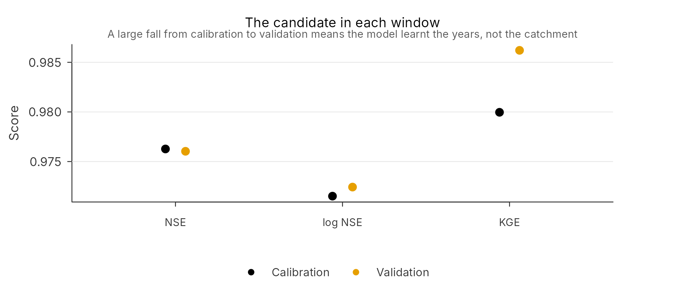

A calibration fits whatever it is given. If the rain gauges missed a storm, the search bends the model to make a flood out of no rain; if the area is wrong, it bends the water balance; if a peak lies above the highest gauging, it fits a guess. None of these shows in the score. They show only if you look for them, before and after calibrating.
This article walks through every check pdmS7 offers, in the order to run them: what each measures, what a failure looks like, and what to do about it. It uses one record throughout, and a copy of it with faults put in on purpose, so that each check can be seen to fire.
| When | Check | Asks | Function |
|---|---|---|---|
| Before registering | Annual totals | Is the rain and evaporation plausible for the place? | check_inputs() |
| Before registering | Runoff ratio | Does less water leave than falls? | check_inputs() |
| Before registering | Water balance by year | Does each year fit the water and energy limits, and does any year or period stand apart? | water_balance() |
| Before calibrating | Event balance | Did each event shed less quick flow than its rain? |
find_events(), plot()
|
| Before calibrating | Event screening | Which events are too small, gappy or doubtful to judge by? | screen_events() |
| Before calibrating | Gauge response | Which gauge does the quick response follow; is any clock out or any gauge dry? | gauge_response() |
| After calibrating | Parameters | Did the search press against a limit? | calibration_checks() |
| After calibrating | Peaks and timing | Are the largest floods the right size, at the right time? | calibration_checks() |
| After calibrating | The stages | Did each stage do its job, and did the starts agree? | calibration_path() |
The record
Five years of hourly rain over a 25 km2 catchment, and the flow of a model of it with measurement error added. This is the record as it should be.
rain <- synthetic_rain("2019-10-01", years = 5, dt = 1, seed = 11)
forcing <- data.frame(time = rain$time, rain = rain$rain, pet = rain$pet)
truth <- pdm_presets("standard")
truth$area_km2 <- 25
truth$td <- 1
model <- pdm_from_config(truth)
set.seed(11)
flow <- run_pdm(model, forcing, initial_state_from_flow(model, 0.4, 0.7))$output$q_m3s *
exp(rnorm(nrow(forcing), 0, 0.08))Before registering: the whole record
The first check looks at the record as a whole. Rain and evaporation should add up to plausible annual totals for the place, and the flow, spread over the catchment, should come to less than the rain: some of what falls evaporates. The share that runs off, the runoff ratio, is about 0.2 in the dry south-east of England and 0.8 or more in the wet north and west. A ratio above one means the rain is too low, the flow too high, or the area wrong.
check_inputs(forcing, flow, area_km2 = 25)
#> Input check: 5.0 years at 1 h steps
#> rain 0 missing, 0 negative, mean 0.08118, 712 mm a year
#> pet 0 missing, 0 negative, mean 0.06251, 548 mm a year
#> flow 0 missing, 0 negative, mean 0.3469
#> Runoff is 62% of rain
#> Nothing implausible foundHere everything is plausible. Now the same record with the area mistyped as 2.5 km2, the kind of slip that happens when copying from a catchment descriptor:
check_inputs(forcing, flow, area_km2 = 2.5)
#> Input check: 5.0 years at 1 h steps
#> rain 0 missing, 0 negative, mean 0.08118, 712 mm a year
#> pet 0 missing, 0 negative, mean 0.06251, 548 mm a year
#> flow 0 missing, 0 negative, mean 0.3469
#> Runoff is 615% of rain
#> CHECK:
#> runoff is 615% of rain, outside 10% to 90%: check the area, the units or the rainThe water balance is impossible, and the check says so before any calibration is spent on it. A model given this area would need ten times the rain it has. No store can make up that difference, and a rainfall factor unlocked for the search would reach its limit and still fall short.
Year by year: the water balance
A whole-record check can pass while single years fail. Over a year a
catchment stores little, so what it loses, rain minus flow, is mostly
evaporation. That gives two limits (Budyko, 1974): the loss cannot
exceed the rain, so the flow cannot go negative, and it cannot much
exceed the potential evaporation, because the atmosphere cannot take
more. water_balance() measures both for every water year,
from October, and looks for years, or runs of years, that stand apart
from the rest:
wb <- water_balance(forcing, flow, area_km2 = 25)
wb
#> Water balance over 5.0 years with flow: rain 712 mm, potential evaporation 548 mm, flow 438 mm a year
#> Runoff ratio 0.62; loss over potential evaporation 0.50; baseflow index 0.67
#> year complete rain pet flow ratio loss_pet flag
#> 2020 100% 710 549 498 0.70 0.39
#> 2021 100% 706 547 430 0.61 0.51
#> 2022 100% 632 548 347 0.55 0.52
#> 2023 100% 721 548 447 0.62 0.50
#> 2024 100% 787 546 466 0.59 0.59
#> Nothing implausible found
plot(wb)
Each water year’s loss over its rain against its potential evaporation over its rain. Above the dashed lines is impossible; the grey curve is where a typical catchment lies (Fu, 1981).
The years sit in a cluster below both limits. A part year at the start or end of a record is reported but not judged, since a winter alone would look far wetter than a whole year.
Now the same record with a new rating from October 2022, under which every flow reads 40% higher. No single year stands far from the median, because half the record is affected; the whole-record runoff ratio still looks plausible. The change shows when the years are compared before and after each boundary:
rerated <- flow
after <- forcing$time >= as.POSIXct("2022-10-01", tz = "UTC")
rerated[after] <- rerated[after] * 1.4
wb_step <- water_balance(forcing, rerated, area_km2 = 25)
wb_step$flags
#> [1] "The runoff ratio changes after water year 2022, from 0.62 to 0.85 (+37%): a new rating, a moved gauge or a changed rain network?"
plot(wb_step, type = "double_mass")
Cumulative flow against cumulative rain. The curve bends upward where the new rating starts.
The double-mass curve, cumulative flow against cumulative rain, is straight while the two records agree and kinks where one of them changes. Calibrated across the kink, a model would average two catchments that never existed. The cure is in the data: find out which record changed, and why, before calibrating; or calibrate on one side of the change only.
water_balance() also returns the baseflow index, here
0.67: the share of flow beneath the baseflow line of the events. It is
close to the standard UK index from five-day minima, about 0.2 on clay
and 0.9 on chalk. A value far from what the geology suggests is worth
questioning before the groundwater store is calibrated.
What was done to the data
The check also lists what was done to each series, when it was prepared with pdmS7’s preparation functions (see Getting started with data), so a gap filled with zeros or a unit converted on a guess is in plain sight.
Before calibrating: event by event
The record can balance overall and still be wrong for single storms:
a gauge that missed a storm, a radar outage, a flow record with a step
in it. find_events() finds the storms and their responses
in the record, and for each one measures the rain that fell and the
quick flow it produced: the flow above the slow baseflow line, from the
rise to the end of the recession, as depth over the catchment.
An event cannot shed more quick flow than the rain that fell. Its runoff ratio, quick flow over rain, is usually well below one: some rain wets the soil, some reaches groundwater.
events <- screen_events(find_events(forcing$rain, flow, forcing$time, dt = 1, area_km2 = 25),
flow)
nrow(events)
#> [1] 480
summary(events$runoff_ratio)
#> Min. 1st Qu. Median Mean 3rd Qu. Max.
#> 0.0000 0.1123 0.1680 0.1771 0.2381 0.4240
plot(events)
Each event’s rain against its quick flow. Dashed: a runoff ratio of one, the limit. Grey lines: ratios of 0.5 and 0.1. Hollow: events set aside by screening.
The events lie in a band below the limit, the larger storms shedding a larger share, as wetter soil lets more run off. Now the same record with the rain gauge catching only a twentieth of the largest storm, as when a funnel blocks or a logger fails part way through:
biggest <- events[which.max(events$peak_flow), ]
storm <- biggest$rain_start:biggest$rain_end
broken <- forcing
broken$rain[storm] <- broken$rain[storm] * 0.05
bad_events <- screen_events(find_events(broken$rain, flow, broken$time, dt = 1,
area_km2 = 25), flow)
plot(bad_events)The same record with most of the rain missing for the largest storm. Its event now lies above the limit.
The flood is still in the flow, but nearly all the rain that caused it is gone, so its event jumps above the limit. The screening flags it, and the events stage and the acceptance checks leave it out, so the search does not learn to make floods from nothing:
flagged <- bad_events[grepl("quickflow_above_rain", bad_events$flags), ]
flagged[, c("rain_start_time", "rain_mm", "quickflow_mm", "runoff_ratio", "use")]
#> rain_start_time rain_mm quickflow_mm runoff_ratio use
#> 37 2020-02-13 13:00:00 1.019897 7.941785 7.786851 FALSEA gauge that recorded nothing at all for a storm is caught
differently: with no rain there is no event to find, so the flood shows
up instead as a rise in the flow with no event around it, and as a dry
spell in the rain record during a wet month. The hydrograph,
plot(project_series(project)), shows both.
Screening sets aside four kinds of event. Three are excluded from scoring by default; the fourth is only marked:
| Flag | Means | Excluded by default |
|---|---|---|
quickflow_above_rain |
More quick flow than rain: the rain record must be wrong for this event | Yes |
small_rise |
The peak rises less than a fifth of the baseflow beneath it, lost in the baseflow | Yes |
gaps |
Over a tenth of the event’s flow is missing | Yes |
above_gauging |
The peak lies above the highest gauged flow, so it rests on an extrapolated rating | No, only marked |
In a catchment with a high baseflow, many small storms barely lift
the river. They are the hollow points at the bottom left of the balance
plot, and setting them aside stops the search from fitting noise. The
threshold, min_rise, can be raised or lowered.
Events far below the rest are the other warning. Rain the gauges recorded but the river did not feel can be a gauge outside the catchment catching a storm that missed it, or a heavy shower over one gauge given too much weight. The rainfall article, Catchment rainfall from gauges and radar, shows how to weigh gauges and radar so that each storm’s rain is right.
Which gauge the river answers to
Catchment rain is an average of gauges, and the average can hide a
gauge that matters more than the rest, a gauge whose clock is out, or a
gauge that missed the storms. gauge_response() takes each
gauge on its own and asks how closely the river’s quick response follows
it. It is the cross-correlation analysis long used in karst hydrology
(Larocque et al., 1998), applied gauge by gauge.
The rise in flow from one step to the next is moved almost only by quick runoff. So for each gauge, the correlation of its rain with the rise a few hours later says how well that gauge explains the spikes, and the lag of the strongest correlation says when. Then, for each of the twenty largest floods, the gauge whose rain best matches the rise wins the flood.
Here, three gauges over a catchment of 30 km2. The town gauge sits over the 15 per cent of the catchment that sheds rain at once; the hill and moor gauges cover the rest. The moor gauge’s logger runs an hour late, and the hill gauge’s funnel blocked during the largest storm.
make <- function(seed) synthetic_rain("2019-10-01", years = 2, dt = 1, seed = seed)
common <- make(1)
gauges <- data.frame(town = 0.5 * common$rain + 0.5 * make(2)$rain,
hill = 0.5 * common$rain + 0.5 * make(3)$rain,
moor = 0.5 * common$rain + 0.5 * make(4)$rain)
catchment <- two_zone_config(within(pdm_presets("standard"), area_km2 <- 30), share = 0.15)
catchment$zones$fast$surface$kb <- 0.6
zoned <- pdm_from_config(catchment)
zoned_start <- initial_state_from_flow(zoned, 0.5, 0.7)
river <- function(zone, rain) {
f <- data.frame(time = common$time, rain = rain, pet = common$pet)
run_pdm(zoned@zones[[zone]], f, zoned_start@states[[zone]])$output$q_m3s
}
set.seed(3)
gauged <- (river("main", (gauges$hill + gauges$moor) / 2) + river("fast", gauges$town)) *
exp(rnorm(nrow(gauges), 0, 0.03))
recorded <- gauges
recorded$moor <- c(0, gauges$moor[-nrow(gauges)]) # the logger an hour late
storms <- find_events(rowMeans(gauges), gauged, common$time)
blocked <- storms[which.max(storms$peak_flow), ]
recorded$hill[blocked$rain_start:blocked$rain_end] <- 0 # the funnel blocked
answers <- gauge_response(recorded, gauged, common$time, area_km2 = 30, max_lag_h = 24)
answers
#> Gauge response: 3 gauges, 20 events
#> gauge lag_h r event_wins event_share size_r dry_events
#> town 0 0.65 9 0.45 0.70 0
#> hill 0 0.43 1 0.05 0.53 1
#> moor -1 0.44 10 0.50 0.52 0
plot(answers)
Each gauge’s rain against the rise in flow, by lag. The dot marks each gauge’s strongest correlation.
The table reads in three ways.
-
Which gauge drives the spike. The town gauge’s
correlation,
r, stands clearly above the others’. Correlations between gauges blur the differences, since much of the rain falls on all of them, so read the ranking and the gap, not the value alone. The flood-by-flood wins are a rougher count over twenty floods, and the large floods are mostly the main zone’s work. - A clock out. Rain cannot follow the flow it causes, yet the moor gauge’s strongest correlation comes an hour before the rise: its clock is late, or the flow’s is early. A lag that differs from the neighbours’ by a whole number of hours points the same way. Check the logger’s time zone and summer-time handling (Preparing the data).
-
A gauge that missed the storms.
dry_eventscounts floods in which a gauge recorded under a tenth of the median gauge. The hill gauge’s blocked funnel shows here, in its lowersize_r, and in the event table:
answers$events[nzchar(answers$events$dry),
c("rain_start_time", "dry", "town.rain_mm", "hill.rain_mm", "moor.rain_mm")]
#> rain_start_time dry town.rain_mm hill.rain_mm moor.rain_mm
#> 17 2021-04-07 14:00:00 hill 18.22444 0 17.71393If one gauge clearly drives the spike, as here, that is evidence for a fast zone fed by that gauge’s area (The two-zone PDM), and for weighting that gauge well in the catchment rain. If no gauge stands out, the catchment average is the right input.
The same analysis cannot say which gauge drives the slow response.
Baseflow answers to the rain of many storms over days or weeks, and over
such spans the gauges’ totals converge, so every gauge correlates with
it alike. Long-term drift between gauges is a matter for the double-mass
curve of water_balance(), above.
After calibrating: the checks a score hides
A calibration run end to end, as Automatic calibration from start to finish describes, here in one call:
options(pdmS7.user = "A Hydrologist", pdmS7.role = "custodian")
project <- file.path(tempdir(), "checks-brook")
unlink(project, recursive = TRUE)
start <- pdm_presets("standard")
start$area_km2 <- 25
calibrate_project(project, forcing, flow, area_km2 = 25,
calibration = c("2021-04-01", "2022-12-31 23:00"),
validation = c("2023-01-01", "2023-12-31 23:00"), structure = start,
starts = 2L, control = list(maxit = 15L), wettest_years = 0)
checks <- calibration_checks(project, top = 10)
checks
#> Acceptance checks. Response time 3.00 h observed, 2.00 h simulated
#> No parameter at a bound
#> Largest events in each window:
#> period events median_peak_error median_abs_peak_error
#> calibration 10 -0.13 0.13
#> validation 10 -0.10 0.10
#> outside 10 -0.13 0.13
#> median_timing_error_h share_peak_within_20pct median_event_nse screened_out
#> -1 0.8 0.96 6
#> 0 0.9 0.96 3
#> -1 0.9 0.96 4Parameters at a limit
plot(checks)
Where each parameter ended within its search range, on the scale the search used. One at either end would be flagged.
A parameter pressed against the end of its range is the clearest warning a calibration gives. The search wanted to go further than any sensible value, nearly always to make up for something else: rain that is too low, an area that is wrong, a structure that cannot do what the catchment does. Widening the range lets the fault hide better; finding it is the cure. A lower bound of zero, such as no time delay, is not flagged: zero is a value, not a limit.
Nothing is flagged here, but recharge.kg ends 98% of the way along
its range, close to its end. Not every parameter pressed to an edge is a
fault in the data: some barely change the flow, and the search moves
them because nothing pulls them back. The recharge and groundwater
constants are the usual drifters; What limits
automatic calibration shows which parameters a record can and cannot
pin down. Before widening a range, ask which: a parameter that matters
and sits at its limit points to a fault elsewhere; one that does not
matter can be fixed at a sensible value with exclude in
calibration_bounds(), so it stops drifting.
Peaks and timing
plot(checks, type = "peaks")
Simulated against observed peaks of every event, by window. Dashed: 20% either side.
plot(checks, type = "timing")
How late each simulated peak comes, against its size.
The score over the whole record is dominated by the many hours of ordinary flow. These two plots look only at the floods. Here the peaks run 12% low in the median, while NSE on the calibration window is 0.98: a short calibration that has the timing right and the size wrong, which is just what the events stage is for. Peaks consistently low, or consistently late, outweigh a good score: see Getting the floods right for what to do about them, from the events stage to adjusting the largest floods by eye.
The stages
path <- calibration_path(project)
path
#> Calibration path: 3 automatic calibrations
#> 0004 1 of 3: volume and baseflow NSE 0.946, log NSE 0.963, volume -0.0%, 846 runs
#> 0005 2 of 3: fast response NSE 0.976, log NSE 0.974, volume +0.3%, 224 runs
#> 0006 3 of 3: polish NSE 0.976, log NSE 0.972, volume -0.6%, 533 runs
#> Candidate NSE by window: calibration 0.976, validation 0.976
plot(path)
The scores after each stage of the calibration.
Each stage has its own job. The first should settle the water balance
and the low flows (log NSE); the second should lift the floods (NSE)
with the balance held; the polish should move little. A first stage that
leaves log NSE poor means the slow stores cannot match the record: look
again at the area, the evaporation and the recharge rule.
plot(path, type = "starts") shows each start’s result:
starts that end far apart mean the search has more than one valley, and
more starts are worth their cost.
plot(path, type = "windows")
The candidate’s scores in each window.
A large fall from the calibration window to validation means the model has learnt the calibration years rather than the catchment. Some fall is normal; a fall of a tenth or more in NSE deserves a look at what changed between the windows.
The order of work
-
Prepare and check the record with
check_inputs(), then year by year withwater_balance(). Fix any flag before going on: a calibration cannot repair a wrong area, a misread unit or a change of rating. -
Look at the events with
plot(events). Points above the limit are storms the rain missed; screening sets them aside, but several from one gauge mean the gauge needs a look. -
Calibrate, with
calibrate_project()or step by step. -
Run the checks:
plot(calibration_checks(project))for the parameters, then the peaks and timing;plot(calibration_path(project))for the stages. - Act on what they show before proposing the candidate: each failure points back to the data, the structure or the stages, as the overview shows.
Every plot here also draws in ggplot2: replace plot()
with ggplot2::autoplot() to get a ggplot to change or
combine. pdm_save() writes any of them at report, slide or
journal size.
References
Larocque, M., Mangin, A., Razack, M. and Banton, O. (1998). Contribution of correlation and spectral analyses to the regional study of a large karst aquifer (Charente, France). Journal of Hydrology, 205(3-4), 217-231. doi:10.1016/S0022-1694(97)00155-8.